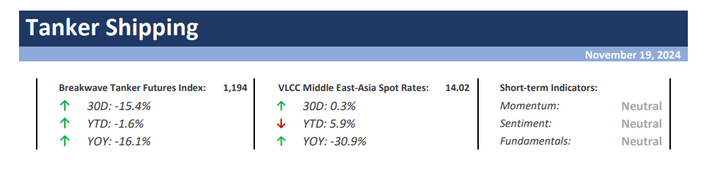
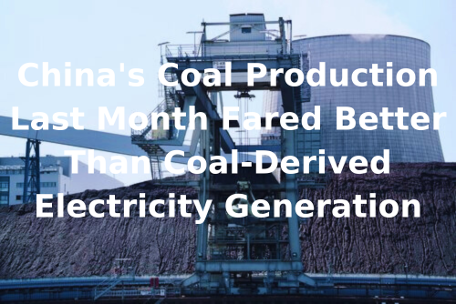
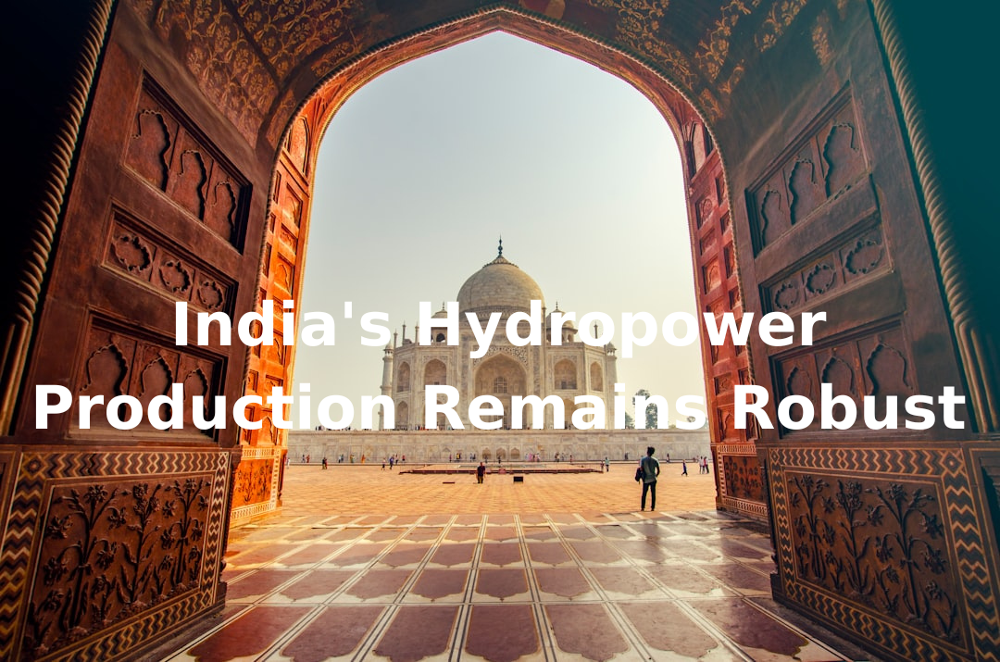

As we conclude the workweek and head into the weekend, take a moment to review the key articles from this week, including those you've highlighted.The importance of an FFA market in today’s volatile shipping freight market,Is the seasonal VLCC pickup appearing?,The latest East-West divide,Demolition activity, and more.
VLCC Market Faces Mixed Signals: Rate Rebound Amid China's Shifting Crude Strategy and Weaker Demand– The beginning of Bahri week broughtencouraging developmentsfor Very Large Crude Carrier (VLCC) owners, as rates improved in both East and West African markets.

Capesize vessels continue to thrive on the strength of Brazil-China iron ore trade, while Panamax and geared segments remain under pressure, weighed down by softer agricultural exports.
Read More
Doric Weekly Market Insight
The resilience of sustainable infrastructure investment has gained attention, as the world witnessed significant disruptions in economic growth..
Read More
BRS Weekly Dry Bulk Newsletter
US equity valuations are now very challenging.
Read More
Forvis Mazars Weekly Note
Lacklustre oil demand from China has been a leading story in tanker markets this year.
Gibson Tanker Market Report
Demolition activity across all sectors has been notably subdued thus far this year.
Intermodal Weekly Market Report

China's coal production in October totaled 411.8 million tons.
From Commodore's Weekly Dry Bulk Reports
VLCC activity at Saudi ports is on the rise so far in November, with a growing number of tankers loading from the country and arriving ballast
Vortexa - Global Freight Snapshot

As we discussed in Commodore Research's most recent Weekly Dry Bulk Report, China's coal production in October totaled 411.8 million tons.
From Commodore's Weekly Dry Bulk Reports
In today’s volatile shipping market, particularly amid unpredictable global conditions and geopolitical events, Forward Freight Agreements (FFAs) play a crucial role in stabilising and managing risk.
Signal Ocean Special Report
The Baltic Dry Index declined for a fourth consecutive day on Thursday amid weakness across all dry bulk vessel segments.
The Fix - Global Market Update